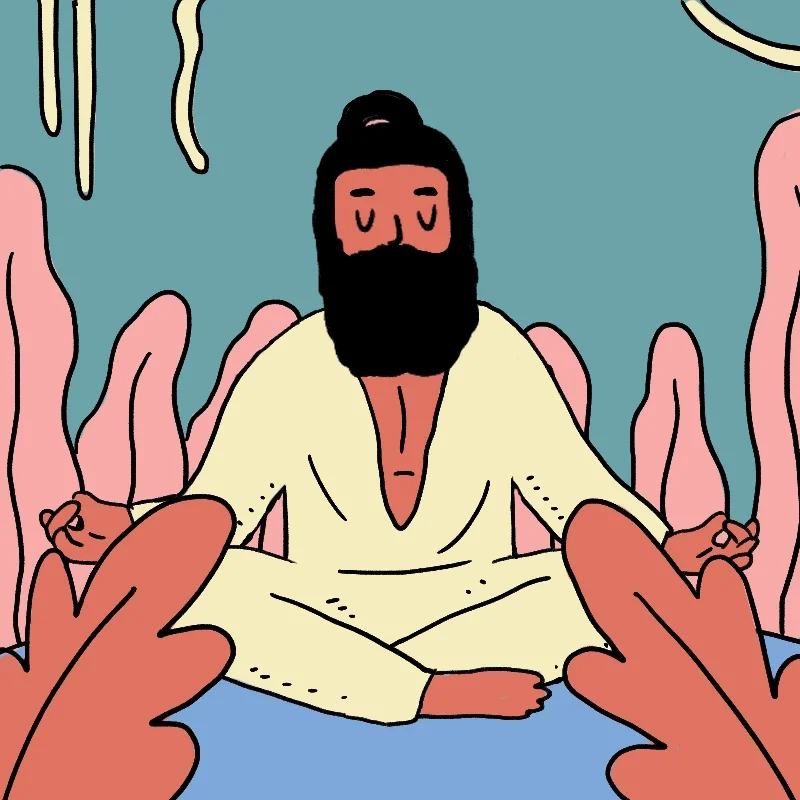

Meditation
“Meditation is like a gym in which you develop the powerful mental muscles of calm and insight." – Ajahn Brahm
What is meditation ?
How to meditate
Meditation isn’t about becoming a different person, a new person, or even a better person. It’s about training in awareness and getting a healthy sense of perspective. You’re not trying to turn off your thoughts or feelings. You’re learning to observe them without judgment. And eventually, you may start to better understand them as well.
Gaining a new perspective on stressful situations.
Building skills to manage your stress.
Increasing self-awareness.
Focusing on the present.
Reducing negative emotions.